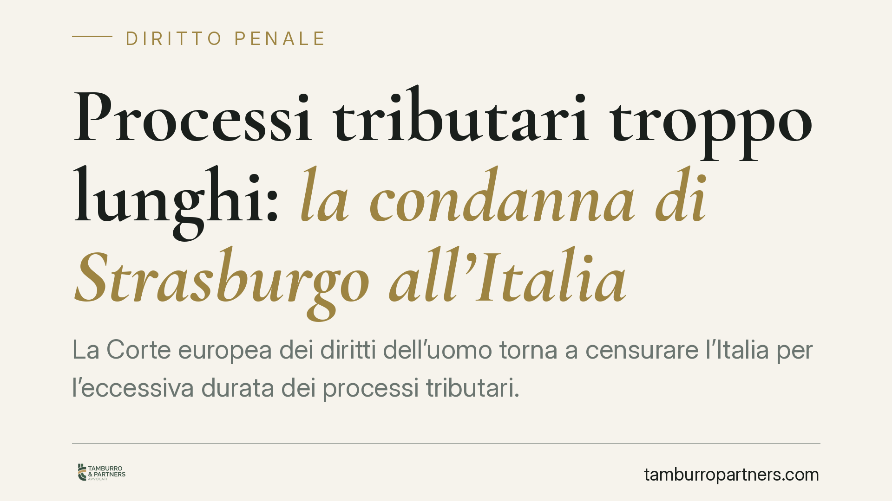

Processi tributari troppo lunghi: la condanna di Strasburgo all'Italia
La Corte europea dei diritti dell'uomo torna a censurare l'Italia per l'eccessiva durata dei processi tributari. Il punto di interesse va oltre i tempi: i giudici di Strasburgo ribadiscono che le sanzioni fiscali, anche di importo modesto, possono avere natura penale ai fini della Convenzione. Una lettura che incide sulle garanzie processuali e sull'applicazione della legge Pinto alle liti con il Fisco.

Il fatto
La Corte europea dei diritti dell'uomo ha condannato l'Italia per la durata irragionevole di alcuni procedimenti tributari. La pronuncia si colloca nel solco di un orientamento consolidato in tema di equo processo, ma offre due spunti di rilievo: la qualificazione delle sanzioni fiscali come potenzialmente penali e il rapporto tra questa qualificazione e l'indennizzo per irragionevole durata.
La materia tributaria ha una posizione particolare davanti alla Corte. La componente relativa all'imposta o al tributo in sé non rientra, di regola, tra le "controversie civili" tutelate dall'art. 6 della Convenzione europea dei diritti dell'uomo (CEDU). La componente sanzionatoria, invece, può assumere natura penale e attrarre le garanzie dell'equo processo.
Inquadramento normativo
Il riferimento è all'art. 6 CEDU, che garantisce il diritto a un processo equo e di durata ragionevole, e all'art. 13 CEDU, che impone agli Stati un rimedio interno effettivo contro la violazione dei diritti convenzionali.
In Italia quel rimedio è la Legge n. 89/2001, nota come legge Pinto. Va ricordato che la disciplina è stata profondamente rivista dalla novella del 2012: l'art. 2 non fissa più un termine unico, ma parametri di durata ragionevole articolati per grado di giudizio. L'art. 4 individua termini di decadenza per la proposizione della domanda di equa riparazione, collegati alla definizione del procedimento presupposto; la verifica puntuale della decorrenza va condotta sul testo vigente, data la stratificazione delle modifiche.
La natura penale delle sanzioni: i criteri Engel
Per stabilire quando una sanzione formalmente amministrativa sia in realtà "penale" ai fini convenzionali, la Corte applica i cosiddetti criteri Engel, elaborati nella sentenza *Engel e altri c. Paesi Bassi* del 1976: la qualificazione giuridica interna, la natura dell'illecito e la severità della sanzione.
Un chiarimento è necessario. Questi criteri non operano in modo rigidamente cumulativo. Ciascuno può da solo condurre alla qualificazione penale; quando però nessuno risulta decisivo se considerato isolatamente, la Corte procede a una valutazione complessiva, sommando gli elementi. Ne deriva che anche una sanzione fiscale di importo contenuto può ricevere natura penale, se la sua funzione è afflittiva e deterrente più che risarcitoria.
La conseguenza è rilevante: dove la sanzione ha natura penale, si rafforzano le garanzie dell'art. 6 CEDU. Resta fermo che la natura penale della sanzione non è presupposto dell'indennizzo Pinto, che spetta per l'irragionevole durata a prescindere dalla qualificazione della pretesa.
Implicazioni pratiche
Per il contribuente coinvolto in una lite fiscale la pronuncia produce effetti su due piani.
Sul piano delle garanzie, la qualificazione penale della sanzione amplia le tutele processuali applicabili alla fase sanzionatoria. Su questo terreno si inserisce anche il principio del *ne bis in idem*, cioè il divieto di essere giudicati o puniti due volte per lo stesso fatto. La Corte, nella sentenza *A e B c. Norvegia* del 2016, ha ammesso la coesistenza di procedimento amministrativo e penale a condizione che sussista tra loro una connessione sostanziale e temporale sufficientemente stretta.
Sul piano dell'indennizzo, la condanna conferma che le controversie tributarie non restano estranee alla tutela contro la durata eccessiva, quando sia in gioco la componente sanzionatoria.
Queste osservazioni muovono dai principi consolidati della Corte, senza attribuire a specifiche pronunce dati non verificabili sul caso concreto.
Cosa fare in concreto
- Occorre monitorare la durata del procedimento tributario, annotando le date di inizio e di definizione di ciascun grado, utili per il calcolo dei termini ragionevoli.
- È opportuno distinguere le componenti della pretesa: imposta o tributo da un lato, sanzione dall'altro, perché seguono regimi di tutela diversi.
- Occorre verificare i termini di decadenza per la domanda di equa riparazione sul testo vigente della legge Pinto, data la riforma del 2012.
- Si consiglia di valutare, nelle vicende con doppio binario sanzionatorio, i profili di *ne bis in idem* alla luce della connessione sostanziale e temporale tra procedimenti.
- In caso di dubbio sulla qualificazione della sanzione o sui rimedi esperibili, è opportuno un esame specialistico del singolo caso.
Disclaimer
Contributo informativo a cura di Tamburro & Partners Avvocati - Avv. Giuseppe Tamburro. Non costituisce parere legale.
Ogni condominio ha una storia a sé.
Se gestisci un'amministrazione e vuoi un confronto su una specifica questione condominiale, scrivi allo studio. Ti rispondiamo entro un giorno lavorativo.